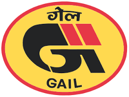
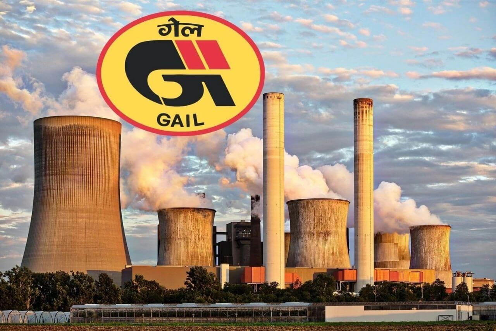
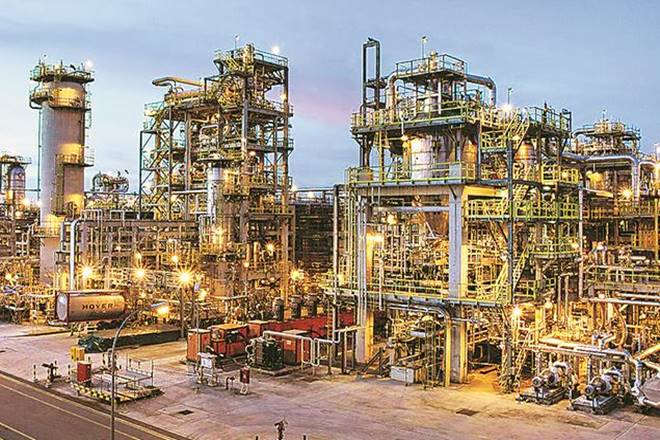
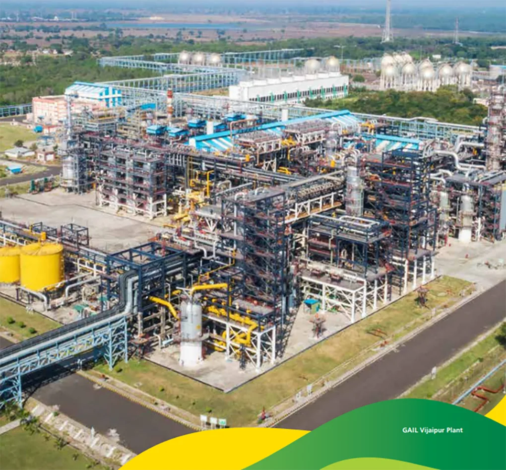
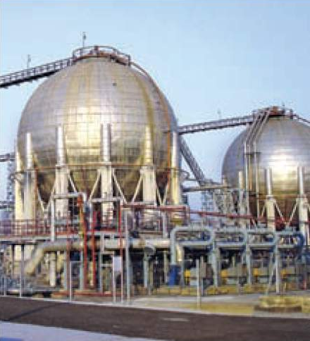
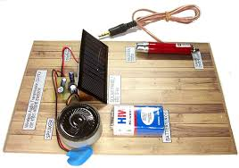
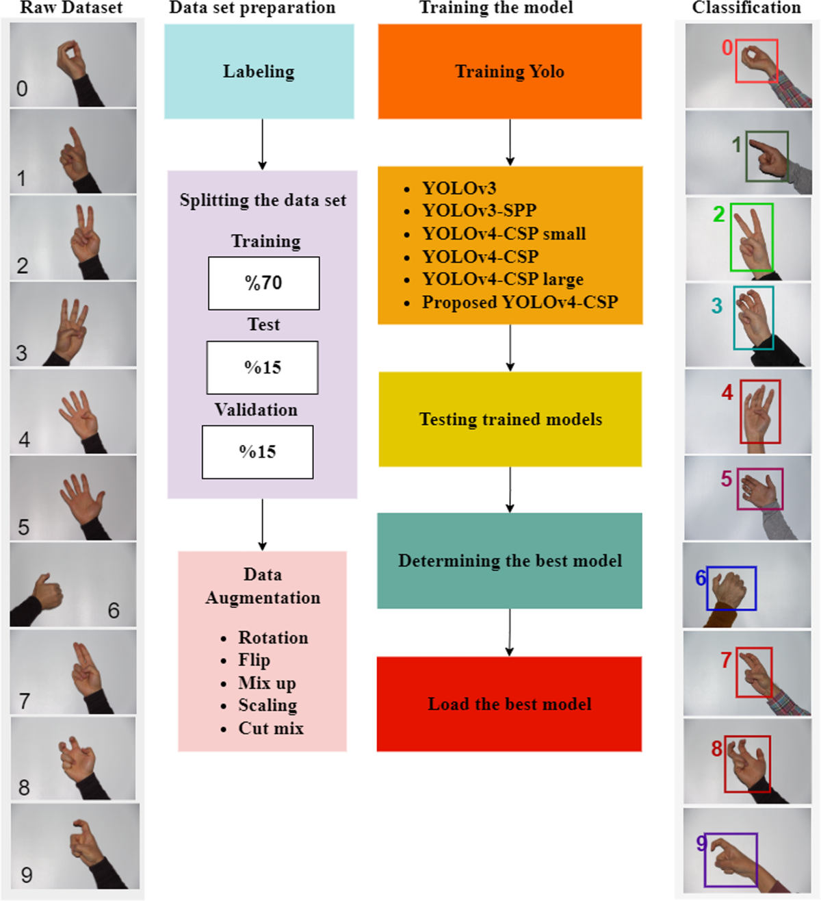
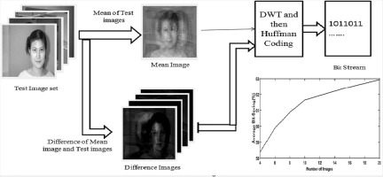
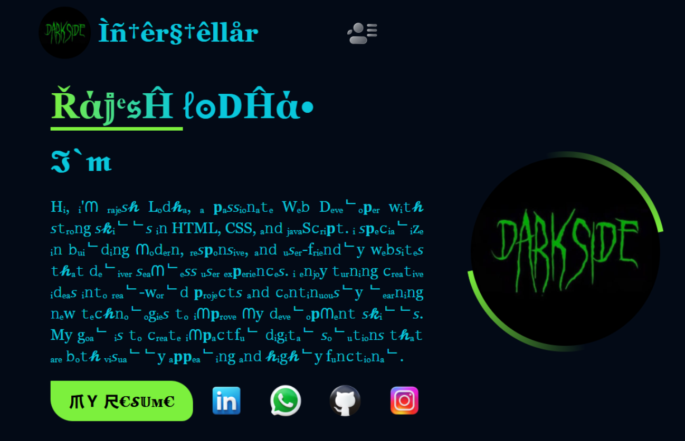
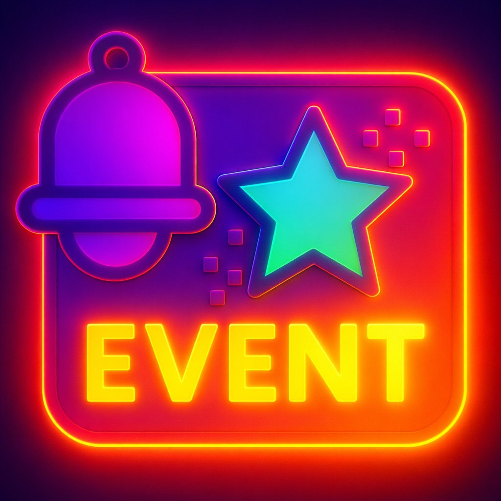

I am an energetic and career-focused fresher with a solid academic
foundation in engineering. I can adapt quickly to new environments,
collaborate effectively with team members, and learn rapidly. I am
looking for an entry-level opportunity where I can apply theoretical
knowledge in practical situations. I am motivated to gain industry
experience and contribute meaningfully to organizational growth. I
aim to continuously develop my skills and support the company in
achieving its long-term objectives.
My Industrial Training & Internships





GAIL (GAS AUTHORITY OF INDIA LIMITED)
10 May 2024 – 09 July 2024 || Vijaypur Guna MP.
Worked as an Instrumentation Intern in a real industrial
environment, gaining hands-on exposure to natural gas processing
and distribution systems.
Understood working of pressure, flow, temperature, and level
sensors.
Observed gas compression and pipeline operations.
Learned safety systems and industrial process control
techniques.
Studied PLC & DCS systems used for monitoring and automation.
I am an Electronics and Communication Engineering student with
strong fundamentals in instrumentation, industrial automation, and
process control systems. Through my internships at GAIL and NFL, I
have gained practical exposure to real plant environments, working
with Automation systems. I am a quick learner, adaptable, and eager
to contribute to real-world engineering projects while continuously
improving my technical skills.
ExperinceEducationSkillsAbout-Me
My Projects
01
Hand Gesture Recognition System
Developed a real-time hand gesture recognition system using Python
and OpenCV. The system detects hand movements via webcam and
translates gestures into actions, improving human-computer
interaction without physical input devices.
Python,OpenCV,MediaPipe,Webcam
02
Laser Music System
Designed a laser-based music system where sound is transmitted
using laser beams. Integrated LDR sensor and audio amplifier
circuit with Arduino to receive and convert light signals into
audible sound output.
Laser Module, LDR Sensor,
Arduino, Audio Circuit

03
Real-Time Sign Language Recognition System using EMG Signals
Built a deep learning-based system to recognize sign language
using EMG signals. The model processes muscle signals and converts
them into meaningful text, helping improve communication for
specially-abled individuals.
Python, EMG Sensor,
Deep Learning, Neural Networks

04
Image Compression using MFT Algorithem & Haffman Coding
Implemented an image compression technique using Discrete Fourier
Transform (DFT). Reduced image size while maintaining quality by
eliminating redundant frequency components, improving storage and
transmission efficiency.
Python, MATLAB, DFT,
Signal Processing

05
Portfolio Website (Interactive UI)
Designed and developed a responsive personal portfolio website
with modern UI/UX. Includes animations, project showcase, contact
form with EmailJS integration, and dynamic content rendering using
JavaScript.
HTML, CSS, JavaScript,
EmailJS

06
Event Reminder Application
Built a dynamic event reminder app with real-time task management
features. Implemented add, edit, delete functionality with local
storage support and user-friendly UI for efficient scheduling and
reminders.
Flutter, Dart, UI,
LocalStorage

Let`s Work Together.
Looking to build something great? I’m always excited to work on
innovative ideas, collaborate with passionate people, and turn
concepts into real-world solutions. Let’s connect!